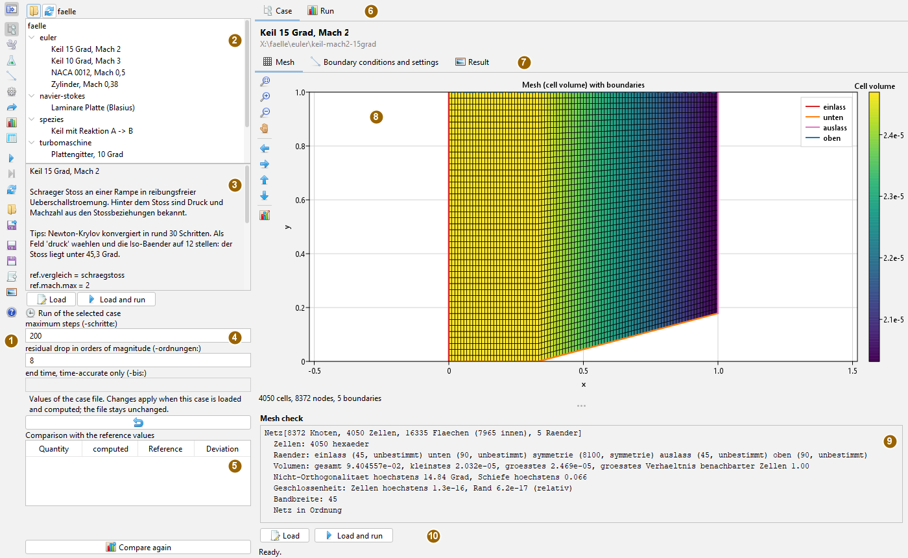
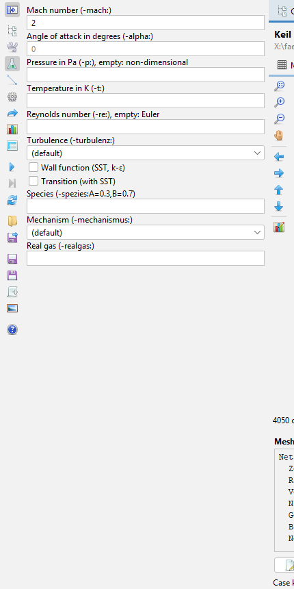
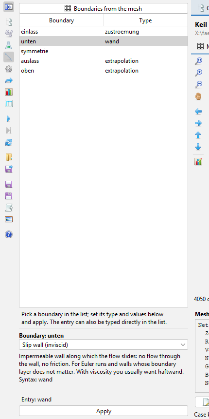
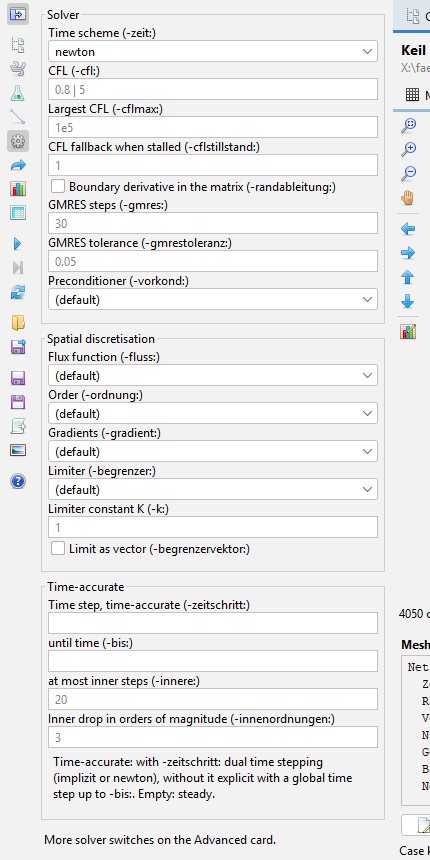
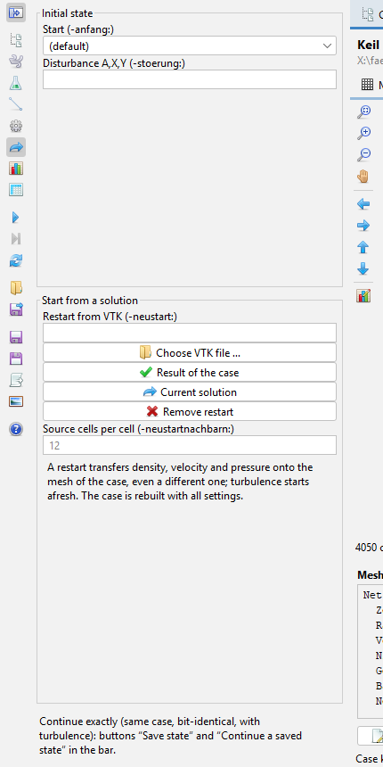
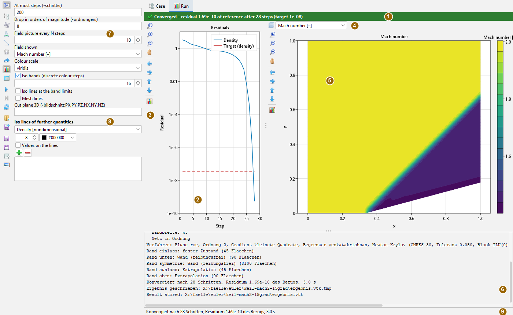

Computing a flow – operation
Operating guide, as of 4 November 2026. How to pick a case from the collection, inspect it, set it up and compute it, how to read the history and how to start from a solution. The pictures are screenshots of the app with the supplied case “Keil 15 Grad, Mach 2” (15° wedge at Mach 2).
The window
Open the app from the Applications menu with Compute a flow (CFD) or with Alt+F. It has no pop-up windows; settings sit as cards on the left, feedback in the panel. Only opening and saving files brings up the file chooser.

The centre has two tabs. Case shows the selected case before anything is computed: the mesh, the boundaries with their meaning, the settings and a stored result. Run shows the current or last run: residuals, field picture and log. Running and “Check mesh” switch to Run by themselves, selecting a case switches to Case.
The basis is always a case file: a list of switches -name:value, one per line. Each card only sets individual switches. Whatever the app computes, the tool cmd.cfd.Stroemung computes the same with the same file.
The bar
The buttons carry symbols only; what they do is shown in the tooltip. The upper eight select a card, the lower ones trigger an action. While a run is going on, every action except Stop, Save field picture and Help is disabled.
| Symbol | Tooltip | What happens |
|---|---|---|
 | Show or hide the toolbar | Hide and show the card; the centre gets the full width. |
 | Case collection | Working directory, tree of cases, run values, comparison. |
 | Case and mesh | Generate or read a mesh, check it; the case file as text. |
 | Physics | Free stream, viscosity, turbulence, gas. |
 | Boundary conditions | Kind and parameters per boundary. |
 | Numerics | Solver, spatial discretisation, time-accurate runs. |
| Start and restart | Initial state, starting from a solution. | |
 | Run and display | Steps, convergence target, field picture, iso lines. |
 | Advanced (all switches) | Every switch of the solver with explanation and check. |
 | Run (or continue) | Computes the case; if it is unchanged, the same solver continues. |
 | Stop | Stops before the next step; continuing is possible. |
| Rebuild (discard the run) | Discards the solver; the next run starts from scratch. | |
 | Open case file | Load a case file from outside the collection. |
| Save case file | Write the case with all changes as a text file. | |
 | Save state (for continuing) | Write the whole state of the solver. |
 | Continue from saved state | Continue bit-identically, as if never interrupted. |
 | Write result as VTK | The field for ParaView or a later restart. |
 | Save field picture (PNG or SVG) | The field picture as shown. |
 | Help: opens the docs for this app (like F1) | The docs app with this operating page; without the docs app the status line gives the address of the website. |
Picking a case from the collection
- Open the Case collection card. The working directory is shown at the top; the folder button selects another one, the button next to it searches it again. The default is the supplied collection with the own example cases and the converted cases from m-ACHIEVE.
- Click a case in the tree. Below appear title, description, tips (highlighted), further details and the case file. The Case tab opens in the centre with the mesh.
- Under Run of the selected case the maximum number of steps, the residual drop in orders of magnitude and, for time-accurate cases, the end time can be changed. This applies to this case only and only in the app; the case file stays unchanged. The return arrow restores the values of the file.
- Load takes the case into the cards, Load and run computes it immediately; a double click in the tree loads.
A case is a folder with a case file fall.txt or with an m-ACHIEVE case (achieve.inp). Next to the case file there may be testfall.properties: title, description, tips and the reference values for the comparison. Relative paths in the case file are taken from the case folder.
After each run of a loaded case the table Comparison with the reference values fills: computed, reference, deviation – for the oblique shock, for example, pressure ratio and Mach number behind the shock against the shock relations. “Compare again” repeats this by hand. Each case in the tree then carries a mark for its last run (converged, not converged, stopped).
Looking at the case before computing
The Case tab builds the mesh of the selected case in the background, by itself up to an estimate of 200 000 cells, above that only on the button “Build mesh”.
- Mesh shows the mesh on the cut, coloured by cell volume, with mesh lines. Every boundary meeting the cut is a coloured line with a legend. Below is the mesh check: cells, boundaries, volume, non-orthogonality, skewness, closure, bandwidth.
- Boundary conditions and settings lists the boundaries with their kind and meaning – including what a boundary without a specification becomes (a wall without viscosity a slip wall, with viscosity no-slip) and where a specification is missing. Next to it are the settings by group: mesh, physics, numerics, run, others.
- Result shows a stored result of the case (see storing) with a selectable quantity. If the case has changed since, the header says so in orange. Start from it loads the case and sets the restart to this result.
The cards
Case and mesh
Choice of the mesh shape of a built-in generator (wedge, channel, box, cylinder, aerofoil, plate, blade passage and others) with cell counts and dimensions, or a mesh file (Gmsh, PLOT3D, CGNS, an m-ACHIEVE case folder). “Check mesh” builds the mesh, shows it in the field picture and fills the list of boundaries. Below stands the whole case file as text: freely editable, “Apply text” sets it as the case.
Physics

Mach number and angle of attack of the free stream. Without pressure and temperature the solver computes non-dimensionally, with them in SI units. Without a Reynolds number it solves the Euler equations; with one the Navier-Stokes equations, laminar or with a turbulence model (Spalart-Allmaras, SST, k-ε, Wilcox), optionally with wall functions and transition.
Species with initial fractions, a combustion mechanism and an equation of state for real gas extend the ideal gas. What they compute is explained on the pages species and real gas.
The tooltip of each field explains the switch and gives its default.
Boundary conditions

unten selected in the boundary editor.The table lists every boundary of the mesh and its kind. “Boundaries from the mesh” reads the names from the mesh without computing first.
Below the table is the boundary editor: select a boundary in the list, choose a kind from the catalogue. Below appears the explanation of the kind with its conditions (such as “only with viscosity”) and its notation, then a field per parameter with unit and default. The resulting specification is shown underneath; if it does not fit, it is red with a reason and “Apply” is disabled.
A specification can also be typed straight into the table; the editor follows. Anything the catalogue does not know stays unchanged as a custom specification. The kinds themselves are described on the page boundaries.
Numerics

Solver: the time scheme (explicit, implicit, Newton-Krylov) and the CFL number. Below only what belongs to the chosen solver is shown: explicit the graphics unit; implicit and Newton the highest CFL, the fallback on stagnation and the boundary derivative; Newton in addition the number of GMRES steps, tolerance and preconditioner.
Spatial discretisation: flux function, order, gradients, limiter and its constant.
Time-accurate: with a time step dual time stepping, without it explicit with a global time step up to the end time. Empty means steady.
The methods are explained on the pages flux, reconstruction and time.
Start and restart

The initial state is the free stream or rest, optionally with a disturbance.
A restart begins the computation on an earlier solution, also on another mesh: density, velocity and pressure are transferred, turbulence starts afresh. The solution comes from a VTK file, from the stored result of the case or from the current run (“Current solution”). A typical use is a first-order start-up, then second order on that solution.
Continuing exactly is only possible with “Save state” and “Continue from saved state” in the bar: the same case, bit-identical, including turbulence.
Run and display
Maximum number of steps and the convergence target in orders of magnitude; how often the field picture is refreshed; the quantity shown, colour scale, iso bands (default 16 levels) or cell colours, iso lines at the band limits, mesh lines; for 3D meshes the cut plane. Under Iso lines of further quantities lines of other quantities can be laid over the colour field, each with levels, colour and optionally values on the lines.
Advanced
The table of all switches set in the case. Below, every switch of the solver can be chosen, with group, explanation, default and allowed values; the value is checked while typing. Switches evaluated only by the command line (such as picture sequences or force histories) are marked as such instead of pretending an effect.
Computing and reading the history

Run in the bar starts the computation in a thread of its own; the interface stays usable. The residual history grows with every step, the field picture is refreshed at the chosen interval. The dashed red line is the target: the reference residual times ten to the minus number of orders of magnitude.
The header above the charts tells how the run ended:
| Colour | Outcome |
|---|---|
| green | converged, with residual, number of steps and target; time-accurate: end time reached |
| red | not converged (step limit reached), aborted (no physical state, with reason) or error |
| orange | stopped |
After a failed run the symbol of the Run tab is red as well, the log carries a note, and a comparison with the reference values is marked as valid only with reservations.
If the case is unchanged since the last run, “Run” continues with the same solver and the residual reference is kept. A change on any card rebuilds the case at the next run.
The bar next to each chart resets the view, zooms in and out, switches the pan mode and pans in four directions. Its last button opens the Axes and titles card on the right: titles, legend, ranges, logarithmic axes.
The field image from the graphics device
If the case runs on the graphics device, the field image arrives finished from there during the run: the state stays on the card and only the image goes to the CPU. This applies to density, velocities, pressure, Mach number, temperature, magnitude and residual. The values themselves are fetched when the view needs them: for iso-lines on bands, iso-lines of further quantities, logarithmic or inverted axes and in the mesh view. The last image of a run is always made from the values. If the card is lost during the run, the images come from the CPU again.
Early abort: -abbruchfaktor:F (Advanced card or case file, F greater than 1) ends the run as soon as the relative residual rises above F or is no longer a number. The header shows this as an abort with its reason.
Implicit and chemistry on the graphics unit
Card Method: LU-SGS on the graphics unit (switch lusgsgrafik) computes the implicit step by colours on the card. The switch chemiegrafik (group Gas, species and chemistry of the switch list) computes the stiff chemistry per cell there. It is not bit-identical to the CPU, pays off from about a thousand cells, and the first compilation takes one to three minutes. Both are off by default; more under the graphics unit.
Storing and passing on results
- Storing: when a case of the collection converges or reaches its end time, the app puts
ergebnis.vtkandergebnis.properties(outcome, steps, residual, date, checksum of the switches) into the case folder. The Result sub-tab shows it the next time the case is selected. - Write VTK puts the result in a freely chosen place, Save field picture the picture as PNG or SVG.
- Save case file writes the case with all changes. With this file
cmd.cfd.Stroemung -op:rechne -fall:FILErecomputes the same without a user interface. - Save state and continue are meant for long runs: interrupt, continue bit-identically later.
Limits
- For 3D meshes the app shows a plane cut, not a spatial view.
- Convergence is relative to the largest residual of the first ten steps. A restart on an already converged solution has a very small reference and usually does not reach further orders of magnitude; the run then ends as “not converged” although it sits on the solution.
- The log lines written by the solver (mesh check, method, boundaries) are in German, as on the command line.